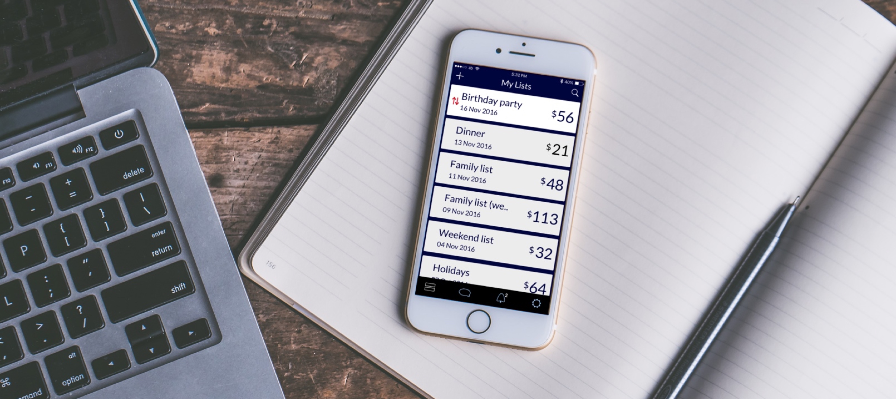
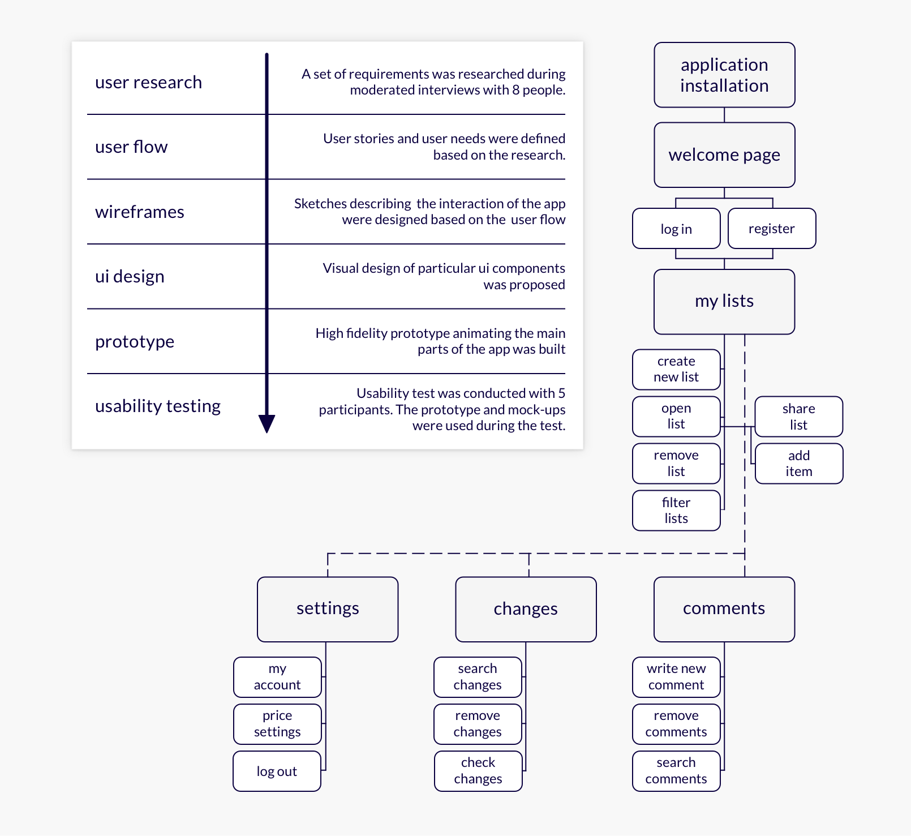
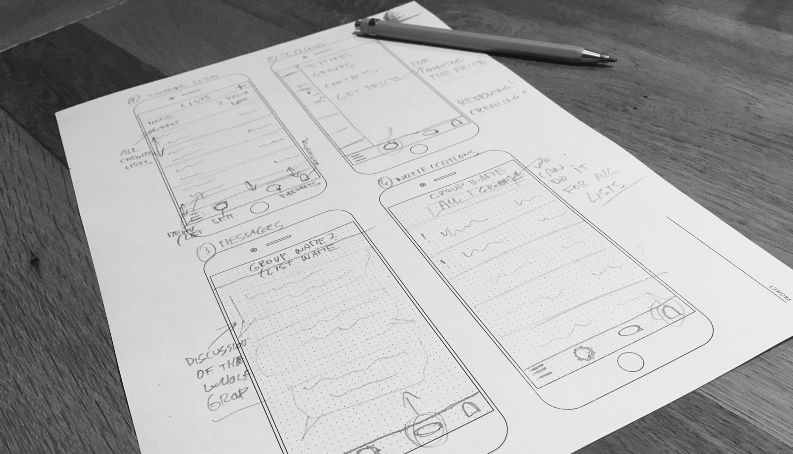
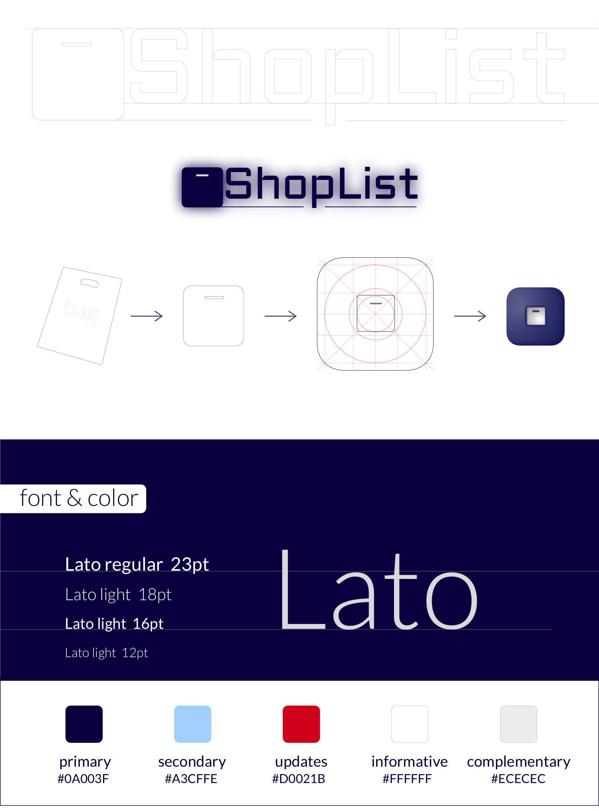
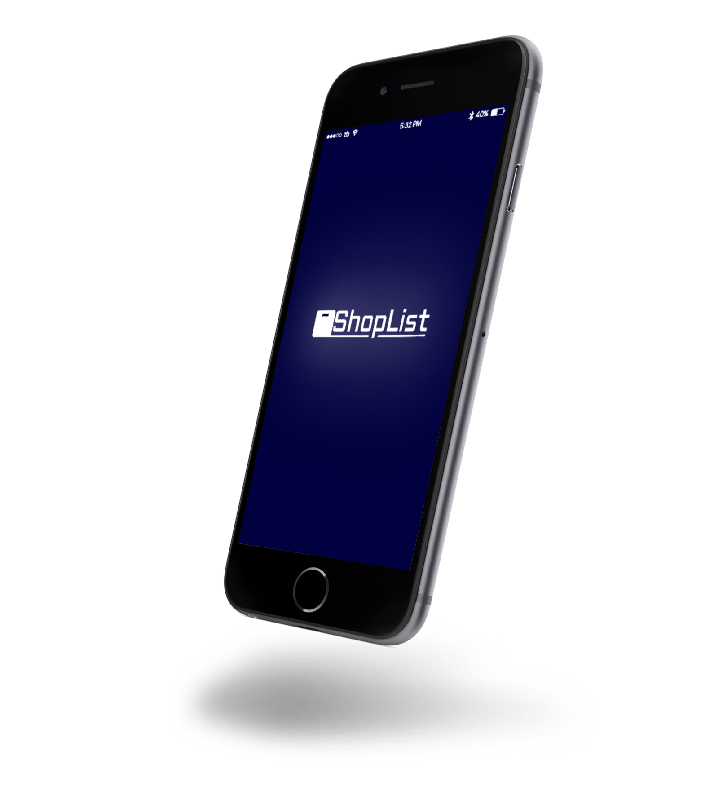
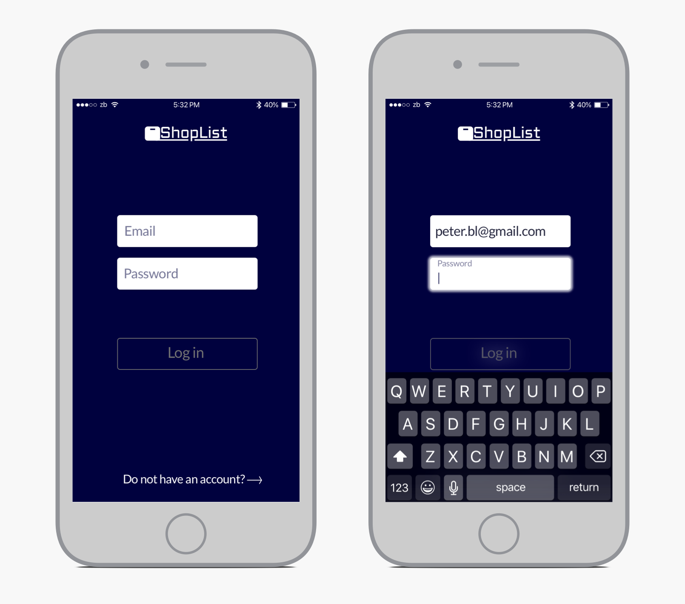
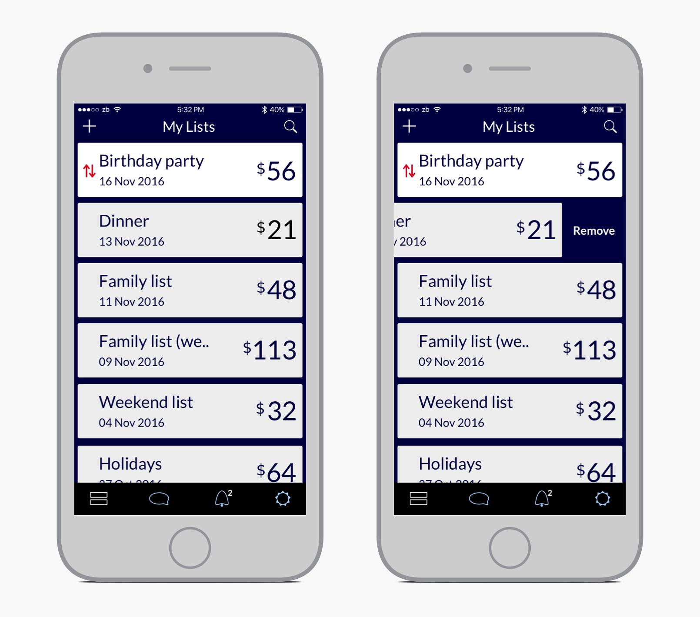
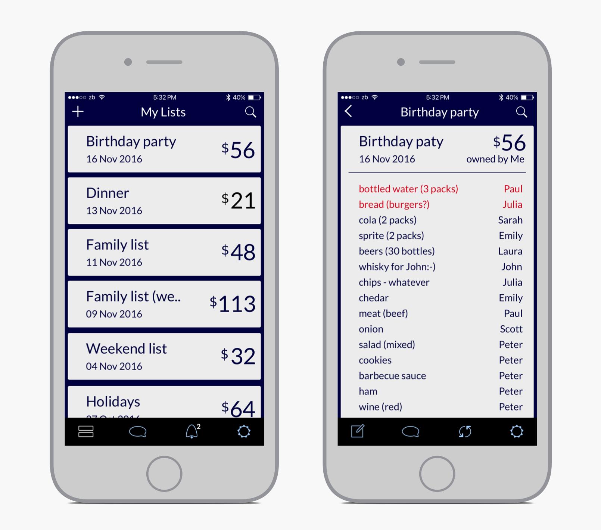
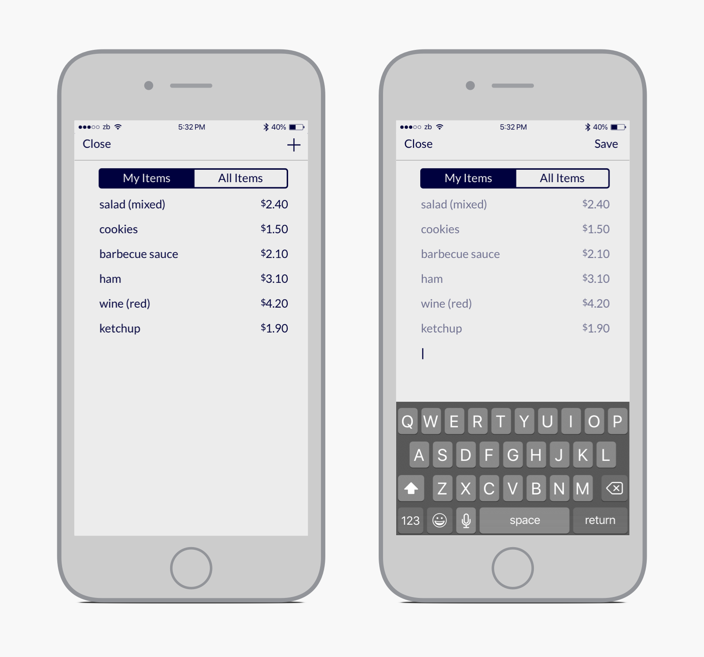
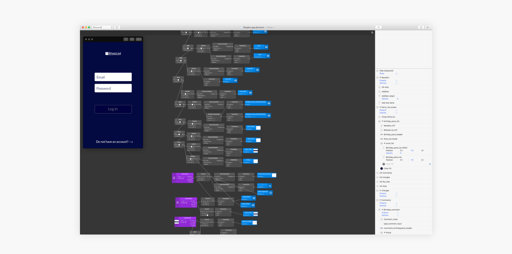

This case study describes an application concept which offers a framework for creating, sharing and prioritizing shop items for diverse social groups (families, friend or colleagues). The proposed design helps in creating and sharing shopping lists with others and manages the whole shopping and related logistics.

The problem and motivation
This personal project was following the set requirement “to get an app for creating and managing shopping lists used for daily shopping activities” which came out from my personal and friends’ needs regarding shopping habits. I have experienced never-ending online discussions about who would do the shopping for an event, when, and in what amount, many times, so I was always thinking of an easy solution to this simple problem. Another goal of the project was to give the Origami Studio a try and use this tool for creating animations and prototypes.
Design process
The final application design should have definitely reflected all of the main points and findings acknowledged during the user research. I organized informal, moderated interviews with 8 people to sum up their needs and motivations. Target users of this app are people who often plan group events (parties, barbecues etc.) and need to manage a bigger shopping list to get everything for everyone (so I interviewed friends who often face similar situations). A set of brief requirements and user stories were defined based on the research with these people. To sum up briefly, the app should offer users the following:
- creation, editing and sharing shopping lists with their contacts
- lists can be edited by all group members that have received access by the list owner
- each change should be visible via a notification shown to all group members, and
- everyone can comment on the list to make the cooperation more effective and quicker.

Design process diagram shows the consecutive steps from the user research to the final test; schematic flow chart summarizes all designed functionality which were set based on the user research.
In the next phase, I started by specifying the most important functionality and set up a flow chart of the application. This gave me a good overview of what should have been designed and how users would easily reach their needs (I also set my goals in terms of which part of the app would be finalized and included into the prototype; I knew that the app would not be coded now so I decided to exclude, for example, settings and some other screens). Then, I started first sketching simple wireframes following the defined user flows. I tried to explore more possible directions in multiple iterations.

Once those ideas were finalized, I progressed with playing around with final user interfaces and designed visual guidelines to be used in the following steps. This was also a moment when I got the idea of the app icon style which eventually influenced the final visual style of the user interface. All screen designs were following the proposed visual guidelines and aiming to a flat and minimalistic approach (focusing on important and easy-to-understand information). During this phase, I used some of the sketched design directions and tried out which of them worked the best with the chosen colors, fonts, and the proposed icon.

A process of creating the logo of the app and user interface elements used in the app.
Final designs
The gallery below shows some of the screens of the application. I tried to follow common iOS patterns and make everything as simple as possible because my target group would be relatively diverse. Four main sections were included: shopping lists, comments, changes, and settings (a part with the login flow was designed as well). This proposed functionality was following the set requirements and should provide users a full control over their shopping activities.





High fidelity mockups and prototypes were created as the last step of the design process, animating the main parts of the app - I used the mentioned Origami Studio for the prototypes and animations.
A short, formative usability test was finally conducted with 5 participants who played around with the created prototype and mockups during a moderated interview where I tried to test the set requirements. This helped me to better understand the efficiency of designed interfaces and interactions.

Screen with an Origami Studio file showing a part of the prototype.
Project's takeaway
As mentioned above, this personal project was created only for fun, without any ambitions for its implementation. I just realized these user needs and tried to find a solution for certain problems. But, who knows? Maybe one day I will push the app to its implementation! ;-)
To sum up, I have to say that Origami Studio was a very strong tool for creating animations and prototypes. At the same time, I must admit that the learning curve was quite steep in the beginning. However, once you understand the logic of the object-oriented approach and get to know most of the useful components, the tool helps you create nice, high-fidelity prototypes (or its snippets) at an impressive speed. Using this tool was a nice experience and I gained a lot during this project, and I will definitely use it for designing detailed prototypes in the future.
← BACK TO PROJECTS